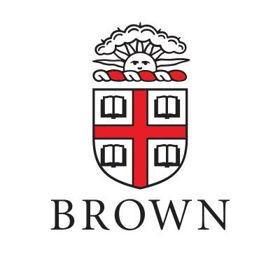

Image Basics
(Week 1-3) |
Tue, Aug. 30 |
Lec. 1: Introduction
Logistics
Course overview
|
WHY: computer vison applications
|
final project (fp): ideas
|
| Thu, Sep. 1 |
Lec. 2: Image Formation
Light: gamma curve
Material: BRDF
Camera: geometry, color
|
WHAT: optics, and human vision, digitalization
|
|
| Tue, Sep. 6 |
Lec. 3: Point Operations
Transfer function
|
HOW: pixel-level
|
|
Thu, Sep. 8 |
Lec. 4: Filtering
Linear and nonlinear filters
|
HOW: patch-level
- [R] CV: 3.2-3.3
- [C] OpenCV
|
lab1 due
ps1 out (formation)
|
| Tue, Sep. 13 |
Lec. 5: Image Features
Edge, line, corner
|
HOW: feature-level
|
|
| Thu, Sep. 15 |
Lec. 6: Image Decomposition
Frequency: Fourier basis, antialiasing
Scale: pyramid, blending
|
HOW: frequency/pyramid-level
|
lab2 due
|
Deep Learning
(Week 4-7) |
Tue, Sep. 20 |
Lec. 7: Machine Learning I
Machine learning overview
Linear regression
|
AlexNet: linear layer
|
ps1 due
ps2 out (processing)
|
| Thu, Sep. 22 |
Lec. 8: Machine Learning II
Logistic regression
Stochastic gradient descend
|
AlexNet: loss layer
|
lab3 due
|
| Tue, Sep. 27 |
Lec. 9: Neural Networks I
Activation functions
Pytorch Tutorial
|
AlexNet: fully-connected layer
|
|
| Thu, Sep. 29 |
Lec. 10: Neural Networks II
Computation graphs
Backpropagation
|
AlexNet: optimization
|
lab4 due
fp: sign-up due
ps2 due
|
| Tue, Oct. 4 |
Lec. 11: Convolutional Networks
Convolution and pooling layers
Normalization and dropout layers
|
AlexNet: layers for efficient learning from images
|
Mon: ps3 out (NN)
|
| Thu, Oct. 6 |
Lec. 12: AlexNet and Beyond
VGGNet, BatchNorm, ResNet
Network visualization
|
Beyond AlexNet: three tricks to crack ImageNet
|
lab5 due
|
| Tue, Oct. 11 |
No Class (Monday schedule) |
|
| Thu, Oct. 13 |
Lec. 13: Review CNN
Lab 6: Forward and backward pass
Pset 3: Dataset and dataloader
|
|
fp: proposal check-in (in-person)
|
Image Understanding
(Week 8-9) |
Tue, Oct. 18 |
Lec. 14: Hacker's Guide
Data: preprocessing, augmentation
Model: activation,
Optimization: optimizer, fine-tuning
|
AlexNet: data and optimization tricks
|
lab6 due
ps3 due
fp: proposal due
|
| Thu, Oct. 20 |
Lec. 15: Object Detection
Problem formulation
Two-stage and single-stage
|
Target domain: bounding boxes
|
ps4 out (CNN)
|
| Tue, Oct. 25 |
Lec. 16: Image Segmentation
Generic/Semantic/Instance segmentation
FCN, SegNet, U-Net
|
Target domain: grid label
|
|
| Thu, Oct. 27 |
Lec. 17: Image Generation
GAN and conditional GAN
|
Target domain: natural images
|
lab8 due
|
Video Understanding
(Week 10-11) |
Tue, Nov. 1 |
Lec. 18: Motion
Motion representation
Optical flow
|
Target domain: grid label
|
fp: data check-in
ps4 due
|
| Thu, Nov. 3 |
Lec. 19: Video Classification
Action recognition
Recurrent Neural Network
|
Target domain: temporally-linked bounding boxes
|
lab9 due
|
| Tue, Nov. 8 |
Lec. 20: Object Tracking
Single-object tracking, Siamese NN
Multi-object tracking, Graph NN
|
Target domain: temporally-linked bounding boxes
|
|
3D Understanding
(Week 11-14) |
Thu, Nov. 10 |
Lec. 21: Image Transformation and Alignment
Homogeneous coordinate, homography
Feature matching, RANSAC
|
Target domain: transformation matrix
- [R] CV: 2.1, 3.6.1
- [R] CV: 7.1
|
lab10 due
|
| |
Tue, Nov. 15 |
Guest Lecture: Dr. Pengchuan Zhang
Research scientist @ Meta AI
Affliated assistant prof. @ UW
|
Vision-language multimodal intelligence
|
fp: model check-in
|
 |
Thu, Nov. 17 |
Guest Lecture: Dr. Deqing Sun
Staff Research Scientist and Manager
Google
|
|
|
3D Understanding
(Week 11-14) |
Tue, Nov. 22 |
Lec. 22: Stereo Vision
Perspective geometry
Stereo matching, depth prediction
|
Target domain: grid label
|
ps5 out (stitching)
|
| No Class (Thanksgiving Break) |
| Tue, Nov. 29 |
Lec. 23: Geometric Deep Learning
PointNet
|
Source domain: point cloud
|
|
Multi-modal Understanding
(Week 14) |
Thu, Dec. 1 |
Lec. 24: Vision + X
Lanugage: GPT-3
Audio
|
|
|
 |
Tue, Dec. 6 |
Guest Lecture: Dr. Ce Liu
Chief Architect for Computer Vision
Microsoft Azure AI
|
|
ps5 due
|
|  |
Thu, Dec. 8 |
Guest Lecture: James Tompkin
Assistant Professor @ Brown University
computer vision for creative media
|
|
fp: in-person slide check-in
|
Final Projects
(Week 16) |
Tue, Dec. 13 |
Final Week
|
|
fp: slide due
|
| Thu, Dec. 15 |
Final Week
|
| |
| Mon, Dec. 19 |
|
| final project (report/code due) |